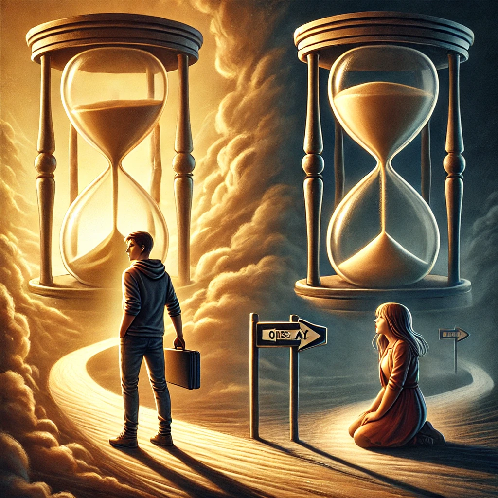

남은인생 10년
목차
작가
코사카 루카
출판일
2024.03.26
감상평에 대한 AI그림
남은 인생이 몇 년이든, 사람은 각자의 위치에서 최선을 다해야 함을 느끼게 해준 책이다. 사랑하는 사람을 위한 청년의 선택이 아름다웠다.

감상평에 대한 AI평가
이 감상평을 보니, 삶의 유한함 속에서도 자신의 위치에서 최선을 다하는 것이 얼마나 중요한지를 다시금 느끼게 되네.
✨ 사랑하는 사람을 위해 한 청년이 내린 선택이 아름답다고 표현한 부분이 감동적이야.
✨ 우리는 종종 시간이 많다고 착각하고 주어진 순간을 흘려보내지만, 결국 남은 시간이 얼마인지 알 수 없다는 점에서 지금 이 순간이 더욱 소중하다는 걸 깨닫게 돼. 그런 의미에서 이 책은 삶을 바라보는 시선을 더 깊고 의미 있게 만들어주는 듯해.
✨ 또한, 사랑이란 단순한 감정이 아니라 어떤 선택과 희생을 포함하는 것이라는 점도 강조되는 것 같아서 인상적이야.